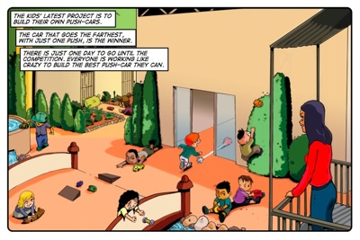
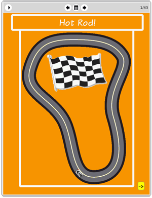

Story: The Race
Theme: Using information to improve your work.
Synopsis
The Thunderbolt kids design push-cars and compete to propel them the farthest with a single push. Everyone works hard through multiple versions of their models except for Lazlo and his sidekick. They spy on their classmates and copy their designs instead of making their own mistakes. Their push-car is a combination other characters’ designs and falls apart on the ramp.
Lazlo fails because he steals the end product of other people’s work without going through the process of learning himself. Sophie finds that her push-car won't go straight without a gutter and needs to be heavier in front. Farrah finds that her sail needs to be closed when the push-car sets off. Tom uses scientific principles to test and retest the effects of changes he makes to his booster. And Jojo's design depends on solid aerodynamics to ensure the hood doesn't detach from the skateboard.
The Thunderbolt Kids develop their models through various stages of trial and error and scientific hypotheses. At each stage of development they gather and analyse information that helps them to make their next draft more effective. This means that they learn something from the competition, which is the real victory. And so this story encourages learners to see their work in Kusasa – all their work, in fact – as ever-evolving and always open to improvement. And they explore the idea that analysing information is key to producing better work.
Activity: The Car Experiment
The Car Experiment loosely parallels what the Thunderbolt Kids do in the story. Your learners do an experiment to test their predictions about the effect of gradient on a toy car’s speed. This gives them the opportunity to record and analyse information. It also allows them to fine tune the conditions of the experiment to give them more accurate results. They might build longer ramps, find more accurate stopwatches or use bigger toy cars. The important thing about this exercise is that it teaches your learners the value of learning from their mistakes and using the information that they have to help them improve.

The eToys project: Hot Rod!
Learners follow Tom’s instructions to make a car slow down onscreen just like the cars in the classroom activity. Unlike most of the eToys projects available online, which require that objects first be painted using the paint palette, Kusasa projects provide illustrated or photographic objects. Once learners have completed each project they are able to use these objects in their own projects, and thereby to build up a “toybox” of objects to play with.
Some of the eToys projects include a fun “splash page” which learners can come back to and examine when they become more familiar with eToys. For instance, in this project the splash page includes a tiny car which automatically races around the grey track.